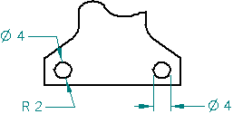
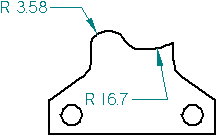

Measure elements automatically
You can use the Smart Measure command to measure elements in model documents and on drawings.
-
Choose Inspect tab→2D Measure group→Smart Measure
 .
. -
Click the first element to measure.
Example:You can:
-
Click a line to measure its length or angle.

-
Click a circle, and then select the Angle or Radius options on the command bar.

-
Click an arc to measure its length, angle, radius, or diameter.

-
Click an ellipse or curve to measure its radius.

-
-
To measure between two elements, click the second element.
Example:Depending upon what you selected first, you can:
-
Click a second line.

-
Click a second circle.

-
-
Right-click to restart the command, or press Esc to end the command.
Tip:-
For drawing measurements, you can change the value in the Text Size box on the on the Smart Measure command bar to 3.00 or larger. This makes the measurement text easier to see on the drawing sheet.
-
When using Smart Measure to measure between two elements, you can also use the Shift key on the keyboard to toggle the measurement axis between Horizontal/Vertical (A) and Between Two Points (B).
-
You can use the options in the Properties group on the command bar to affect what type of measurement you obtain. For example, to change from a linear measurement between two lines to an angular measurement between two lines, select the Angle option on the command bar before or after you click the second line.
-